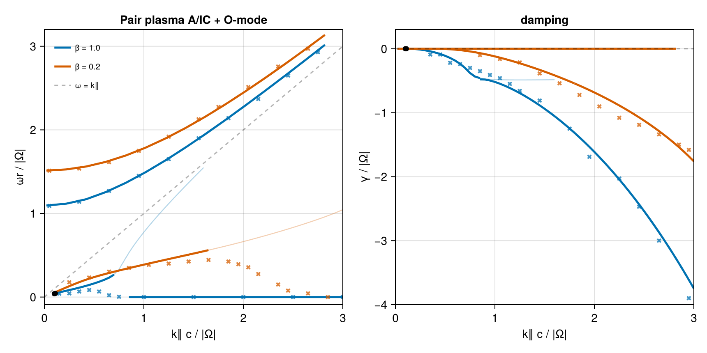

Relativistic pair plasma — (López 2014, Verscharen 2018)
A hot electron–positron pair plasma: both species share an isotropic Maxwell–Jüttner momentum distribution, μ = mc²/T = 2Π²/β∥. We reproduce the two transverse branches of §4.4, Fig. 5 of the ALPS paper (Verscharen et al. 2018, JPP 84, 905840403), which itself reproduces Fig. 1 of López et al. (2014, PoP 21, 092107), for two temperatures: β = 1.0 (μ = 2, blue) and β = 0.2 (μ = 10, red):
- the quasi-parallel A/IC wave (low
ωr): a weakly damped propagating Alfvén-like mode at smallk∥that turns strongly cyclotron-damped; - the ordinary wave (O-mode, high
ωr): a superluminal branch starting atωr ≈ 1.1(β = 1) /1.5(β = 0.2) rising toward the light line,γ ≈ 0throughout.
We verify against the two tabulated roots of the ALPS test_relativistic case (~1 % in Re ω), against Fig. 5 pixel-digitized at 300 dpi (marker size ±0.05 in ωr, ±0.1 in γ), and cross-check the closed-form Maxwell–Jüttner susceptibility (Swanson time-integral) against the general grid path (CoupledVDF).
using VlasovMaxwellDispersion
using Printf
using CairoMakiePlasma setup
Normalized to the gyrofrequency |Ω| = 1; Π² = ωp²/Ω² = 1 per species; momenta in mc, k in Ω/c, k⊥ = 10⁻³ (quasi-parallel, as in ALPS). MaxwellJuttner(μ) feeds the relativistic closed-form tensor. Equal masses and opposite charges make R/L degenerate, so the parallel branch is a single relativistic Alfvén-like mode.
pair(vdf) = (NormalizedSpecies(1.0, 1.0, vdf), NormalizedSpecies(-1.0, 1.0, vdf))
plasma2 = pair(MaxwellJuttner(mu = 2.0)) ## β = 1.0
plasma10 = pair(MaxwellJuttner(mu = 10.0)) ## β = 0.2
kp = 0.0010.001Verification against ALPS (μ = 2)
ALPS test_relativistic roots: columns (k⊥, k∥, Re ω, Im ω), refined from the tabulated values with seeded Muller.
alps = [
(0.001, 0.1, 3.9621e-2, -2.644e-6),
(0.001, 0.10965, 4.3132e-2, -2.2947e-8),
]
for (kpa, kz, re, im) in alps
sol = solve(DispersionProblem(plasma2, complex(re, im), Wavenumber(kpa, kz)))
ω = sol.omega
@printf(
"k∥=%.5f ALPS Re ω=%.5f VMD Re ω=%.5f ΔRe/Re=%.1e resid=%.1e\n",
kz, re, real(ω), abs(real(ω) - re) / re, sol.resid
)
endk∥=0.10000 ALPS Re ω=0.03962 VMD Re ω=0.03919 ΔRe/Re=1.1e-02 resid=2.3e-14
k∥=0.10965 ALPS Re ω=0.04313 VMD Re ω=0.04262 ΔRe/Re=1.2e-02 resid=1.3e-14Re ω agrees to ~1 %. The damping (Im ω ~ 10⁻⁶) is near-marginal and far more sensitive to ALPS's coarse (p⊥,p∥) sampling than the propagation frequency, so — as in the ALPS paper — the comparison is on Re ω.
Closed-form vs. general relativistic path (μ = 2)
The analytic Swanson susceptibility (MaxwellJuttner) and the general grid-tabulated path (CoupledVDF with Relativistic() closure) are two independent evaluators of the same relativistic tensor. We re-polish representative A/IC roots — the two ALPS points, a propagating hump point, and two purely-damped points — with the CoupledVDF plasma seeded from the closed-form root, and report |Δω|.
plasmaC2 = pair(CoupledVDF(MaxwellJuttner(2.0); para = (-15.0, 15.0), perp = 15.0, regime = Relativistic()))
xcheck = [
(0.1, complex(3.9621e-2, -2.644e-6)), (0.10965, complex(4.3132e-2, -2.29e-8)),
(0.5, complex(0.163, -0.11)), (1.5, complex(0.0, -0.939)), (3.0, complex(0.0, -3.749)),
]
for (kz, ω0) in xcheck
a = solve(DispersionProblem(plasma2, ω0, Wavenumber(kp, kz)))
b = solve(DispersionProblem(plasmaC2, a.omega, Wavenumber(kp, kz)))
@printf(
"k∥=%.3f ω=%.5f%+.5fim |Δω|(closed−general)=%.1e\n",
kz, real(a.omega), imag(a.omega), abs(a.omega - b.omega)
)
endk∥=0.100 ω=0.03919-0.00003im |Δω|(closed−general)=3.5e-05
k∥=0.110 ω=0.04262-0.00007im |Δω|(closed−general)=3.7e-05
k∥=0.500 ω=0.16297-0.11048im |Δω|(closed−general)=2.0e-05
k∥=1.500 ω=0.00000-0.93928im |Δω|(closed−general)=2.2e-04
k∥=3.000 ω=0.00000-3.74944im |Δω|(closed−general)=5.8e-04The two paths agree to |Δω| ≲ 6·10⁻⁴ (tightest, ~2·10⁻⁵, for the propagating roots; loosest at the deep-damped k∥ = 3 point, limited by the CoupledVDF momentum-grid truncation), confirming both evaluators resolve the same relativistic mode.
The A/IC branch: two dispersive zones
López et al. (2014) note the Alfvén branch has two dispersive zones. For μ = 2 our transverse dispersion relation (identical at k⊥ = 0 and 10⁻³) resolves them as two root families that exchange near k* ≈ 0.85:
- Propagating zone (
k∥ ≲ k*): a subluminal root continued from the ALPS seed.ωrrises (the hump) andγdeepens from0to≈ −0.46, matching the digitized Fig. 5 blueγto marker size up tok∥ ≈ 0.65(−0.236vs.−0.24atk∥ = 0.65). - Non-propagating zone (
k∥ ≳ k*): a purely imaginary root (ωr = 0, pinned by the pair plasma'sω ↔ −ω̄mirror symmetry) whoseγdives monotonically to−3.75atk∥ = 3— Fig. 5's blue dive (≈ −3.9). On the imaginary axis the deflated determinant is exactly real, so the root is unambiguous (resid ~ 10⁻¹⁰).
The zones join where the propagating mode's damping meets the purely-damped rate (γ ≈ −0.46/−0.48 at k* ≈ 0.85), giving a near-continuous γ(k∥). In the exchange window k∥ ≈ 0.5–1.25 the published curve descends to ωr = 0 at moderate damping (ωr ≈ 0.02, γ ≈ −0.3 at k∥ = 0.75); our determinant carries no root there — global GRPF surveys over ωr ∈ (0, 0.4), γ ∈ (−1.3, 0) find only the two families above, with the propagating ωr drifting toward the light line instead of turning down past k∥ ≈ 0.5 (the faded tail below). This is precisely the "large-k∥/low-ωr end of the A/IC branch" where Verscharen et al. §4.4 flag the visible deviation between López and ALPS — ALPS's own ωr tails in Fig. 5 overshoot the López descent the same way.
For μ = 10 the exchange never happens within k∥ ≤ 3: the imaginary axis carries no root (γ ∈ (−0.05, −3) scanned) and global surveys around the published descent (ωr < 0.5, γ ∈ (−1.8, 0) at k∥ = 2.45, 2.9) are empty. The single propagating root's γ still tracks the digitized red curve to ≲ 0.2 all the way to k∥ = 3 (−1.76 vs. −1.58), while its ωr keeps rising past the published peak (≈ 0.44 at k∥ ≈ 1.65) instead of descending — the same §4.4 deviation zone, stronger at this temperature in our determinant.
Branch continuation
function trace(plasma, kzs, seed)
ω = similar(kzs, ComplexF64)
s = seed
for i in eachindex(kzs)
s = solve(DispersionProblem(plasma, s, Wavenumber(kp, kzs[i]))).omega
ω[i] = s
end
return ω
end
# μ=2 propagating: forward from the ALPS k∥=0.1 seed (backward to 0.05), into
# the faded light-line tail past k*=0.85
kstar2 = 0.85
kz2p = collect(0.05:0.05:1.6)
j0 = findfirst(==(0.1), kz2p)
ω2p = similar(kz2p, ComplexF64)
ω2p[j0:end] = trace(plasma2, kz2p[j0:end], complex(alps[1][3], alps[1][4]))
ω2p[1:(j0 - 1)] = reverse(trace(plasma2, reverse(kz2p[1:(j0 - 1)]), ω2p[j0]))
i2s = findlast(<=(kstar2), kz2p)
# μ=2 non-propagating: purely imaginary root from k* to 3
kz2d = collect(kstar2:0.05:3.0)
ω2d = trace(plasma2, kz2d, complex(1.0e-4, -0.478))
# μ=10: single propagating root over the full range; ωr departs the published
# descent past k≈1.8 (faded there). Fresh near-marginal seeds below k∥ ≈ 0.3
# make Muller wander to the mirror (negative-frequency) root, so continue
# forward and backward from a robust k∥ = 0.3 seed.
kz10 = collect(0.1:0.05:3.0)
j10 = findfirst(==(0.3), kz10)
ω10 = similar(kz10, ComplexF64)
ω10[j10:end] = trace(plasma10, kz10[j10:end], complex(0.155, -1.0e-4))
ω10[1:(j10 - 1)] = reverse(trace(plasma10, reverse(kz10[1:(j10 - 1)]), ω10[j10]))
i10s = findlast(<=(1.8), kz10)35O-modes
Superluminal (ωr > k∥): the closed-form Landau continuation is unsupported for damped superluminal ω, but the O-mode is near-marginal (γ ≈ 0), so we locate it on the real axis as the |det 𝒟| → 0 minimum via the CoupledVDF path, continued in k∥. Momentum bounds follow the thermal spread (±15 mc at μ = 2, ±5 mc at μ = 10 — the fixed-size grid loses the distribution peak if the box is much wider than the VDF).
using VlasovMaxwellDispersion: dispersion_function
function omode(plasmaC, kzs, wr0)
out = similar(kzs)
wr = wr0
for i in eachindex(kzs)
g = dispersion_function(DispersionProblem(plasmaC, complex(wr), Wavenumber(kp, kzs[i])))
f = w -> abs(g(complex(w, 0.0)))
lo, hi = max(0.9wr, kzs[i] + 0.02), wr + 0.4 + 0.25kzs[i]
for _ in 1:60
m1, m2 = (2lo + hi) / 3, (lo + 2hi) / 3
f(m1) < f(m2) ? (hi = m2) : (lo = m1)
end
wr = (lo + hi) / 2
out[i] = wr
end
return out
end
plasmaC10 = pair(CoupledVDF(MaxwellJuttner(10.0); para = (-5.0, 5.0), perp = 5.0, regime = Relativistic()))
kzo = collect(0.02:0.2:3.0)
ωo2 = omode(plasmaC2, kzo, 1.1)
ωo10 = omode(plasmaC10, kzo, 1.5)15-element Vector{Float64}:
1.5135107167761708
1.5266637171225108
1.5616712545962392
1.617965344827532
1.6941999271370118
1.7885096426198146
1.8988477674034554
2.0231324034924802
2.159338361373586
2.305575163763399
2.4601484483906537
2.621593446443436
2.7886796154534546
2.960394361682561
3.1359155563683636Quantitative check against digitized Fig. 5
fig5 = (
aic_wr2 = [
0.15 0.04; 0.25 0.044; 0.35 0.066; 0.45 0.084; 0.55 0.066;
0.65 0.022; 0.75 0.003; 1.0 0.0; 1.5 0.0; 2.0 0.0; 2.5 0.0; 3.0 0.0
],
aic_gm2 = [
0.35 -0.09; 0.45 -0.09; 0.55 -0.22; 0.65 -0.24; 0.75 -0.3;
0.85 -0.35; 0.95 -0.41; 1.05 -0.46; 1.15 -0.55; 1.25 -0.66; 1.45 -0.81;
1.75 -1.25; 1.95 -1.69; 2.25 -2.03; 2.45 -2.47; 2.65 -3.0; 2.95 -3.9
],
o_wr2 = [
0.05 1.09; 0.35 1.14; 0.65 1.27; 0.95 1.45; 1.25 1.65; 1.55 1.9;
1.85 2.14; 2.15 2.37; 2.45 2.65; 2.75 2.93
],
aic_wr10 = [
0.25 0.177; 0.45 0.234; 0.65 0.304; 0.85 0.348; 1.05 0.385;
1.25 0.4; 1.45 0.425; 1.65 0.444; 1.85 0.425; 1.95 0.393; 2.05 0.356;
2.15 0.275; 2.35 0.15; 2.45 0.077; 2.65 0.044; 2.85 0.0
],
aic_gm10 = [
0.85 -0.099; 1.05 -0.16; 1.25 -0.214; 1.45 -0.386; 1.65 -0.54;
1.85 -0.722; 2.05 -0.902; 2.25 -1.08; 2.45 -1.19; 2.65 -1.339;
2.85 -1.499; 2.95 -1.581
],
o_wr10 = [
0.05 1.511; 0.35 1.537; 0.65 1.614; 0.95 1.749; 1.25 1.918;
1.55 2.127; 1.75 2.274; 2.05 2.512; 2.35 2.758; 2.65 2.971
],
)
println("μ=10 A/IC γ vs digitized Fig. 5 (red):")
for r in eachrow(fig5.aic_gm10)
kd, gd = r
i = argmin(abs.(kz10 .- kd))
@printf(" k∥=%.2f VMD γ=%+.3f Fig5 γ=%+.3f Δ=%+.3f\n", kz10[i], imag(ω10[i]), gd, imag(ω10[i]) - gd)
end
println("O-mode ωr (VMD | Fig5):")
for (m, ωo, lab) in ((fig5.o_wr10, ωo10, "μ=10"), (fig5.o_wr2, ωo2, "μ=2 "))
for j in (1, 5, 10)
kd, wd = m[j, 1], m[j, 2]
i = argmin(abs.(kzo .- kd))
@printf(" %s: k∥=%.2f %.3f | %.3f\n", lab, kzo[i], ωo[i], wd)
end
endμ=10 A/IC γ vs digitized Fig. 5 (red):
k∥=0.85 VMD γ=-0.069 Fig5 γ=-0.099 Δ=+0.030
k∥=1.05 VMD γ=-0.139 Fig5 γ=-0.160 Δ=+0.021
k∥=1.25 VMD γ=-0.228 Fig5 γ=-0.214 Δ=-0.014
k∥=1.45 VMD γ=-0.330 Fig5 γ=-0.386 Δ=+0.056
k∥=1.65 VMD γ=-0.446 Fig5 γ=-0.540 Δ=+0.094
k∥=1.85 VMD γ=-0.576 Fig5 γ=-0.722 Δ=+0.146
k∥=2.05 VMD γ=-0.722 Fig5 γ=-0.902 Δ=+0.180
k∥=2.25 VMD γ=-0.887 Fig5 γ=-1.080 Δ=+0.193
k∥=2.45 VMD γ=-1.074 Fig5 γ=-1.190 Δ=+0.116
k∥=2.65 VMD γ=-1.288 Fig5 γ=-1.339 Δ=+0.051
k∥=2.85 VMD γ=-1.539 Fig5 γ=-1.499 Δ=-0.040
k∥=2.95 VMD γ=-1.683 Fig5 γ=-1.581 Δ=-0.102
O-mode ωr (VMD | Fig5):
μ=10: k∥=0.02 1.514 | 1.511
μ=10: k∥=1.22 1.899 | 1.918
μ=10: k∥=2.62 2.960 | 2.971
μ=2 : k∥=0.02 1.095 | 1.090
μ=2 : k∥=1.22 1.637 | 1.650
μ=2 : k∥=2.82 3.017 | 2.930Figure 5 reproduction
Blue: β = 1 (μ = 2); red: β = 0.2 (μ = 10). Crosses: digitized Fig. 5; open circles: tabulated ALPS roots. Solid: the branch as identified above — for μ = 2 the ωr = 0 non-propagating zone continues the branch past k* (drawn just below the axis-visible zero line). Faded thin: the light-line-bound ωr riser our determinant carries where the published branch turns down — the descent is a continuation artifact of the references (see the closing section), so the faded riser is the true root there, drawn subordinate only because the references lack it. O-mode γ ≈ 0 sits on the zero line.
blu, red = Makie.wong_colors()[1], Makie.wong_colors()[6]
fig = Figure(size = (860, 430))
axr = Axis(
fig[1, 1]; xlabel = "k∥ c / |Ω|", ylabel = "ωr / |Ω|",
title = "Pair plasma A/IC + O-mode", limits = (0, 3, -0.09, 3.2)
)
axi = Axis(
fig[1, 2]; xlabel = "k∥ c / |Ω|", ylabel = "γ / |Ω|",
title = "damping", limits = (0, 3, -4, 0.3)
)
# ωr solid/faded split at the visual departure from the published descent
# (blue 0.7, red 1.65); γ split at the physical exchange (blue k*, red none).
for (kzp, ωp, ir, ii, kzd, ωd, ωoo, c, lab) in (
(kz2p, ω2p, findlast(<=(0.7), kz2p), i2s, kz2d, ω2d, ωo2, blu, "β = 1.0"),
(kz10, ω10, findlast(<=(1.65), kz10), i10s, nothing, nothing, ωo10, red, "β = 0.2"),
)
lines!(axr, kzp[1:ir], real.(ωp[1:ir]); color = c, linewidth = 2.5, label = lab)
lines!(axr, kzp[ir:end], real.(ωp[ir:end]); color = (c, 0.3), linewidth = 1.2)
lines!(axi, kzp[1:ii], imag.(ωp[1:ii]); color = c, linewidth = 2.5)
if isnothing(kzd)
lines!(axi, kzp[ii:end], imag.(ωp[ii:end]); color = c, linewidth = 2.5)
else
lines!(axr, kzd, zero(kzd); color = c, linewidth = 2.5)
lines!(axi, kzd, imag.(ωd); color = c, linewidth = 2.5)
lines!(axi, kzp[ii:end], imag.(ωp[ii:end]); color = (c, 0.3), linewidth = 1.2)
end
lines!(axr, kzo, ωoo; color = c, linewidth = 2.5)
lines!(axi, kzo, zero(kzo); color = c, linewidth = 2.5)
end
lines!(axr, 0:3, 0:3; color = (:black, 0.3), linestyle = :dash, label = "ω = k∥")
hlines!(axi, [0.0]; color = (:black, 0.3), linestyle = :dash)
for (m, c) in ((fig5.aic_wr2, blu), (fig5.o_wr2, blu), (fig5.aic_wr10, red), (fig5.o_wr10, red))
scatter!(axr, m[:, 1], m[:, 2]; color = (c, 0.75), marker = :xcross, markersize = 8)
end
for (m, c) in ((fig5.aic_gm2, blu), (fig5.aic_gm10, red))
scatter!(axi, m[:, 1], m[:, 2]; color = (c, 0.75), marker = :xcross, markersize = 8)
end
scatter!(axr, [a[2] for a in alps], [a[3] for a in alps]; color = :black, markersize = 9)
scatter!(axi, [a[2] for a in alps], [a[4] for a in alps]; color = :black, markersize = 9)
axislegend(axr; position = :lt, framevisible = false, labelsize = 10)
fig
The A/IC ωr descent: a continuation artifact in the references
Everything on this page matches the published references — the tabulated ALPS roots (~1 % Re ω), the damping curves at both temperatures, and both O-modes — except the A/IC ωr descent ("anomalous zone" of López et al.): López/ALPS show ωr turning down to zero past the hump peak, while our determinant carries no root along that path (global GRPF/AAA surveys over the descent boxes find only the families plotted above, at both μ; our two independent evaluators agree there to |Δω| ≲ 6·10⁻⁴).
We adjudicated this numerically, since analytic continuation off the upper half-plane — where all three codes agree and no continuation is needed — is unique:
- Reimplementing López et al. (2014) Eqs. (23)–(26) reproduces their published curves exactly (their formula does carry the descent roots, e.g.
μ = 10peakωr = 0.443atk∥ = 1.7), and matches our root where everyone agrees (ω = 0.03919atk∥ = 0.1— identical to VMD). - AAA rational extrapolation of dense upper-half-plane samples of both functions (held-out residuals
10⁻¹¹–10⁻¹⁰, stable under grid and degree changes) lands on our root (Δ ≤ 0.002) and away from the López descent root (Δ ≈ 0.05–0.5): López's own upper-half-plane values do not continue to their descent root. - The mechanism: their continuation term
θ(the Heaviside-supportedπσΘ(γ−γ₁)Θ(γ₂−γ)in Eqs. 23–24) depends only onRe zandsign(Im z), which enforces continuity across the real axis but violates Cauchy–Riemann below it: the continuedΛ_Lhas holomorphy defect|∂f/∂z̄|/|∂f/∂z| ≈ 0.09–3in the lower half-plane, versus~10⁻⁶for our determinant (and for their ownθ-less integrand). The non-holomorphicΛ_Lacquires a spurious zero — the anomalous-zone descent — with no counterpart in the true continuation. ALPS's fitted continuation partially chases the same artifact, which is why itsωrtails overshoot López's in our direction (their §4.4 deviation).
The physical μ = 2 branch is therefore the one plotted solid above: propagating hump exchanging with the purely-imaginary aperiodic family at k* ≈ 0.85 — while the finite-ωr descent between them is not a mode of the Maxwell–Jüttner pair plasma.
This page was generated using Literate.jl.